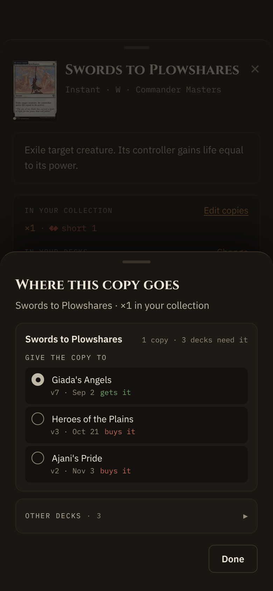
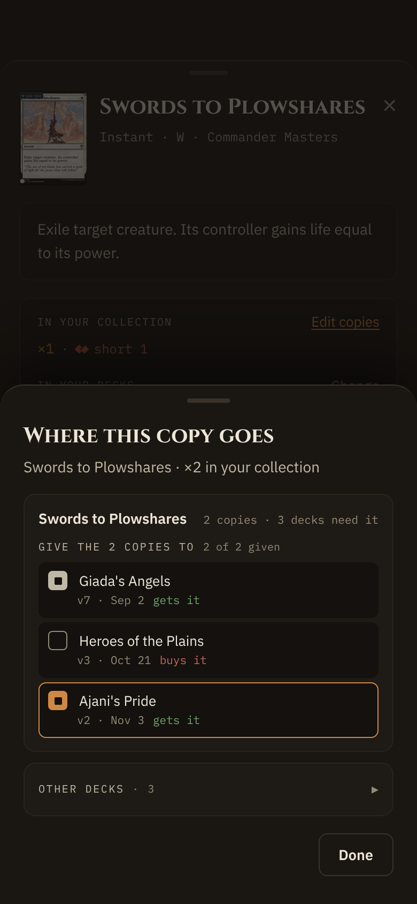
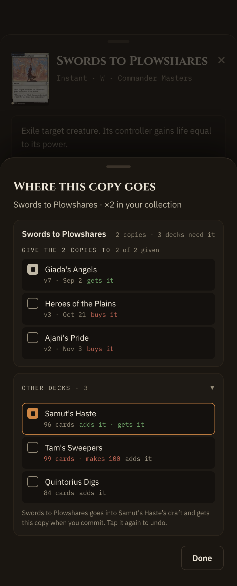

M · more decks than copies · 390
The top section is the shipped row, which already handles any number of decks and copies. Other decks joins the same count.
M1 · 3 decks, 1 copy

Round marks: one copy, one pick. The first committed deck gets it; the other two buy it.
M2 · 3 decks, 2 copies

Square marks and 2 of 2 given. Here Ajani’s Pride was picked over Heroes of the Plains. When both are given, a third tap gets the shipped “untick one first” reason.
M3 · one goes to another deck

A pick in Other decks counts toward the cap: Giada’s Angels and Samut’s Haste, 2 of 2 given.